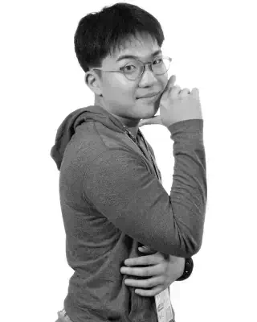

MEDICINE & SCIENCE
医学・生命科学・自然科学。生命の仕組みを理解し、医学の力で人々を直接笑顔にすることを目指しています。
渡邉 仁
Student / Creator / Researcher

学びで誰かを笑顔に、幸せに。
私は、知ること、考えること、そして新しい可能性を形にすることに興味があります。社会科や理科への探究心を原点に、社会の仕組みや法律、人々の暮らしへと関心を広げてきました。
学校では生徒会活動に取り組み、既存の仕組みを見つめ直し、より良い形を考えることを大切にしています。また、芸術やデザインを通じて、自分の考えや感性を表現することも好きです。
異なる分野を横断しながら、物事を多角的に捉え、自分なりの答えを探し続けています。まだ知らない世界を知り、考え、行動する。そして、その学びを誰かの笑顔や幸せにつなげる。その積み重ねを大切にしています。
医学・生命科学・自然科学。生命の仕組みを理解し、医学の力で人々を直接笑顔にすることを目指しています。
法律・政治・歴史・社会制度。人々の権利や社会の仕組みを理解し、より公正な社会の実現を通じて、幅広い人々の幸せに貢献することを目指しています。
生徒会活動・組織運営・制度設計。アイデアを形にし、既存の仕組みをより良く変えることで、より多くの人を笑顔にすることを目指しています。
絵画・デザイン・表現。自分の考えや感情を、色や形、言葉を通じて表現することを楽しんでいます。
テクノロジー・情報技術・新しい発想。技術を活用して身近な課題を解決し、人々の暮らしをより便利で楽しいものにする可能性を探っています。
考え、挑戦し、アイデアを形にする。